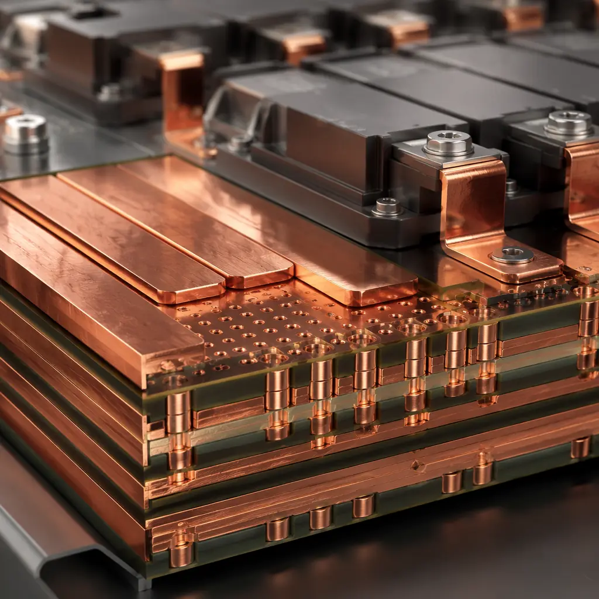
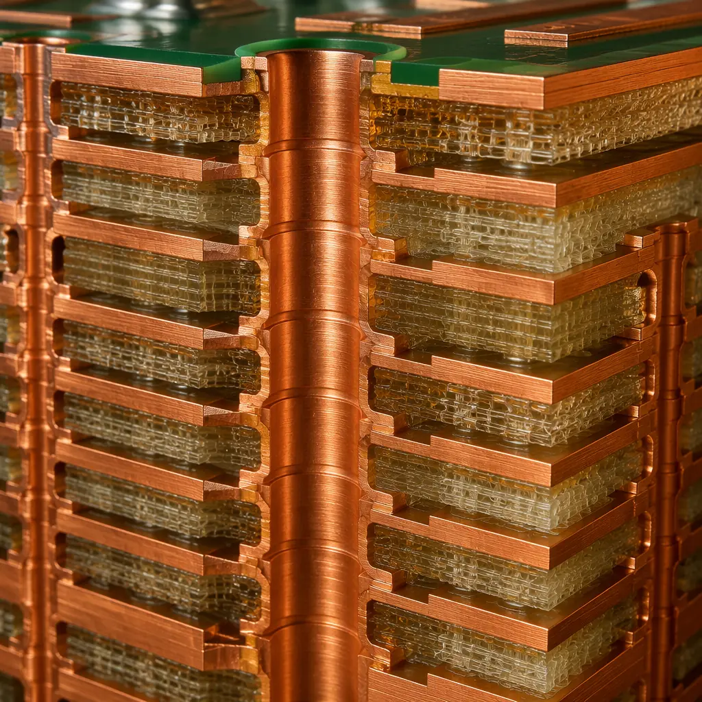
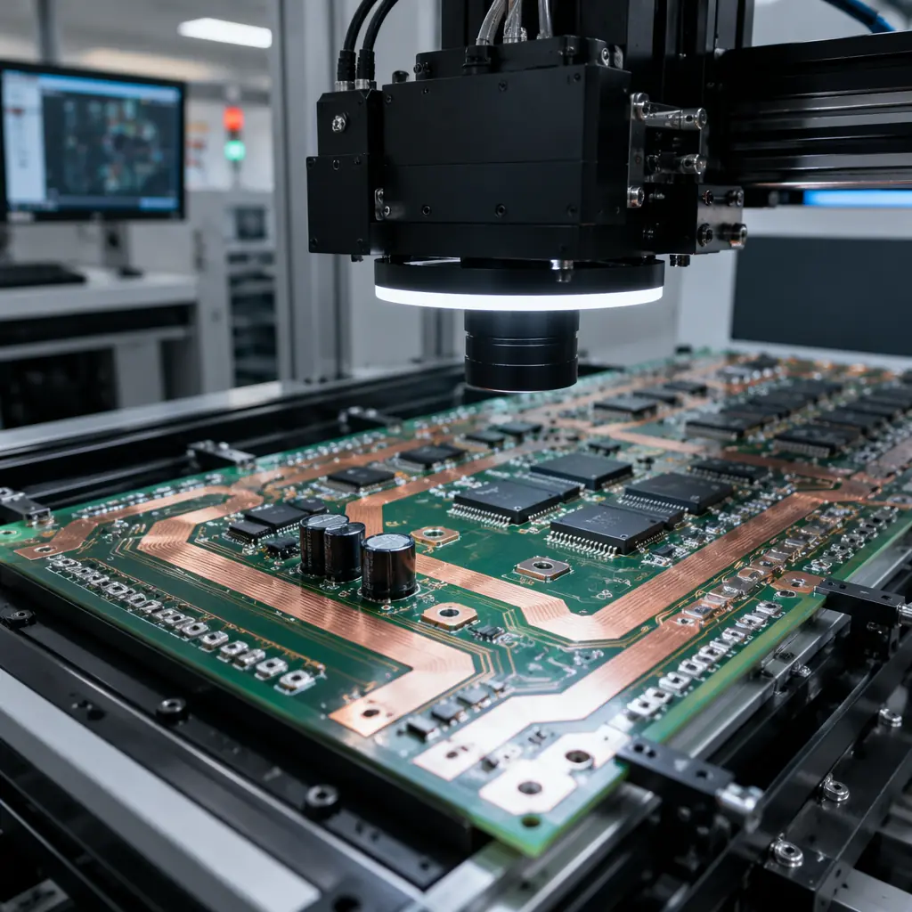

The global solar inverter market shipped over 500 GW of capacity in 2025, and every watt flows through at least one power PCB. Unlike generic power electronics boards, solar inverter PCBs carry unique design requirements: sustained 800-1500V DC bus operation, precision analog front-ends for maximum power point tracking (MPPT), wide-bandgap semiconductor integration (SiC/GaN), and 25-year outdoor reliability with daily thermal cycles from -40°C to +85°C. At Huaxing PCBA, we manufacture solar inverter PCBs for residential string inverters (3-10kW), commercial three-phase inverters (20-100kW), and utility-scale central inverter modules (500kW+), with IPC Class 3 acceptance criteria and 100% automated optical inspection on every board.
What Makes Solar Inverter PCBs Different From Standard Power Electronics?
A solar inverter PCB is fundamentally a power conversion board, but four requirements separate it from a general-purpose power supply PCB:
Sustained High-Voltage DC Bus (600V-1500V)
Modern string inverters operate at 1000V or 1500V DC to reduce I²R losses and cable cost. This demands PCB creepage distances of 8-12mm between high-voltage and low-voltage domains, slot cuts in the board for galvanic isolation, and heavy copper inner layers (4-6oz) for the DC bus — far beyond typical 1-2oz power supply PCBs.
Precision Analog Front-End for MPPT
The MPPT controller measures panel voltage and current at microvolt resolution to track the maximum power point as irradiance changes 100+ times per second. This mixed-signal section — low-noise op-amps, 16/24-bit ADCs, and precision voltage references — must be isolated from the switching noise of the DC-DC boost stage sharing the same PCB. Guard rings, split ground planes, and 4-layer analog shields are standard practice.
Wide-Bandgap Semiconductor Integration (SiC MOSFET / GaN HEMT)
Silicon carbide (SiC) and gallium nitride (GaN) power devices switch at 50-200kHz with dv/dt exceeding 50V/ns. At these edge rates, PCB parasitic inductance of even 2nH causes destructive voltage overshoot. Solar inverter PCBs using SiC/GaN require optimized gate-drive layouts with Kelvin-source connections, minimized power loop area (<1cm²), and ceramic-substrate or insulated metal substrate (IMS) construction for the power stage.
25-Year Outdoor Reliability With Daily Thermal Cycling
A rooftop inverter in Arizona experiences 70°C temperature swings every 24 hours — from freezing at night to 90°C+ inside the enclosure during peak sun. Over 25 years, that's 9,125 thermal cycles. Standard FR-4 delaminates after 500-800 cycles at these extremes. Solar-grade PCBs use high-Tg (170-180°C) substrates, low-CTE materials, and 3-5× thicker copper-to-resin interfaces to survive the lifetime requirement.

Key PCB Sub-Assemblies Inside a Solar Inverter
A modern string inverter contains 3-5 distinct PCB assemblies, each with different manufacturing requirements:
| PCB Sub-Assembly | Function | Key Specs |
|---|---|---|
| DC-DC Boost Converter Board | Boosts panel voltage (30-50V per string) to DC bus voltage (400-1500V) | 4-8 layer, 3-6oz copper, IMS or ceramic for SiC stage, interleaved topology for ripple cancellation |
| MPPT Controller Board | Measures I/V, runs perturb-and-observe or incremental conductance algorithm, controls boost stage PWM | 4-layer mixed-signal, guard rings around ADC inputs, isolated ground planes, 0.1% tolerance sense resistors |
| DC-AC Inverter Bridge | Converts DC bus to grid-synchronized AC (single-phase 230V or three-phase 400V) | 6-12 layer, heavy copper, Kelvin-connected gate drivers, laminated bus bar for low-inductance DC link |
| Grid Interface & Filter Board | LC/LCL output filter, relay disconnect, grid voltage/current sensing, anti-islanding detection | 4-6 layer, high-current traces (50A+), current transformer integration, UL 1741/SA compliant spacing |
| Communication & Monitoring Board | Wi-Fi/Ethernet/RS-485/CAN communication, data logging, remote firmware update | 4-layer digital, impedance-controlled differential pairs for Ethernet/USB, isolated RS-485 transceivers |
Material Selection for Solar Inverter PCBs

| Material | Property | Best For |
|---|---|---|
| High-Tg FR-4 (Tg 170-180°C) | Standard high-reliability laminate, Tg 170-180°C, CTE 12-14 ppm/°C below Tg | Control, communication, and low-power boards; residential inverter main boards |
| Polyimide (Tg 250°C+) | Highest thermal endurance, CTE 10-12 ppm/°C, excellent for multilayer (>12L) with heavy copper | Utility-scale inverter power stages, boards with >200W dissipation |
| IMS (Aluminum Core) | 1.5-3.0 W/m·K thermal conductivity, single-layer circuit on dielectric bonded to aluminum | SiC/GaN power stages where direct heatsink mounting is required; LED driver boards |
| Ceramic (Al₂O₃ / AlN) | 20-170 W/m·K thermal conductivity, zero organic content, CTE matched to Si/SiC die | SiC MOSFET modules with direct die-attach; >200°C operating temperature |
| Heavy Copper FR-4 (4-10oz) | Thick copper layers on high-Tg FR-4 base, 105-210μm per layer | DC bus planes, high-current traces (100-300A), laminated bus bar integration |
PCB Design Rules for 1500V Solar Systems (IEC 62109 Compliance)
IEC 62109-1 and -2 govern safety requirements for power converters in photovoltaic systems. The PCB-level implications are stringent:
Creepage & Clearance Distances
For 1500V DC working voltage at Pollution Degree 2 with CTI ≥ 175 (standard FR-4): creepage ≥ 12.5mm, clearance ≥ 12.5mm between primary and secondary circuits. This often requires slot cuts (2mm minimum width) in the PCB to meet creepage without excessive board real estate. Our engineering team validates every slot dimension against the IPC-2221 creepage calculator before fabrication release.
Reinforced Insulation for Grid Isolation
The isolation barrier between the DC PV side and the AC grid side must withstand 4242V DC (1.5 × 1500V × √2 + safety margin) for 60 seconds. This is typically achieved with a combination of PCB slot cut + isolation transformer + optocoupler/digital isolator components — never PCB trace spacing alone at these voltages.
Partial Discharge Testing for >1000V Boards
At operating voltages above 1000V, partial discharge (PD) in PCB voids becomes a long-term failure mechanism. Per IEC 60664-4, PD inception voltage must exceed 1.875 × peak operating voltage. Our manufacturing process for >1000V boards includes vacuum lamination to minimize voids and PD testing at 1.5× rated voltage on 100% of production — a requirement often missed by general-purpose PCB fabricators.

Thermal Management: Why 5°C Matters Over 25 Years
The Arrhenius equation is unforgiving: every 10°C increase in operating temperature halves the expected life of electronic components. A solar inverter PCB that runs 10°C hotter due to poor thermal design will fail in year 12 instead of year 25. Our approach:
Copper Weight Optimization per Layer
Power layers (DC bus, switching nodes) use 4-6oz copper for current capacity AND lateral heat spreading. A 4oz plane reduces thermal resistance from a hotspot to the board edge by ~60% compared to 1oz. We run thermal simulation on every new design to determine the minimum copper weight per layer that meets the 25-year target.
Thermal Via Arrays Under Power Devices
For SMD power devices (TO-263, PowerPAK, DirectFET), an array of 0.3mm plated thermal vias under the thermal pad transfers heat from the component to the bottom-side copper plane and heatsink. Our standard is 25-49 vias in a 10×10mm grid with 0.3mm drill / 0.6mm pitch — providing ~15 W/m·K effective through-plane conductivity.
Aluminum Core / Ceramic Substrate for Critical Hotspots
For the boost converter stage where a single SiC MOSFET may dissipate 30-50W, a small IMS or ceramic daughter board soldered to the main PCB provides a direct thermal path to the enclosure heatsink, bypassing the FR-4 bottleneck entirely.
Huaxing PCBA Solar Inverter PCB Capabilities
| Parameter | Capability |
|---|---|
| Max layers | 32 layers |
| Max copper weight | 10oz (inner & outer) |
| High-Tg materials | Shengyi S1000-2 (Tg 180°C), ITEQ IT-180A, Isola 370HR |
| Polyimide | Available for >20-layer heavy copper boards |
| IMS / Aluminum core | Single & double-sided, 1.0-3.0mm aluminum thickness |
| Via types | Through-hole, blind, buried, microvia (laser), back-drilled for high-speed signals |
| Slot cutting | 2mm minimum, CNC routed for creepage extension |
| Surface finish | ENIG, ENEPIG, immersion silver, immersion tin, HASL lead-free, OSP |
| Solder mask | Green, black, white, blue — LPI and photoimageable dry film |
| Silkscreen | White/yellow/black legend, minimum line width 0.12mm |
| Testing | 100% AOI, flying probe, ICT, 4-wire Kelvin, hipot to 6kV DC, partial discharge per IEC 60664-4 |
| Certifications | ISO 9001, ISO 14001, IATF 16949, ISO 13485, UL (E53210) |